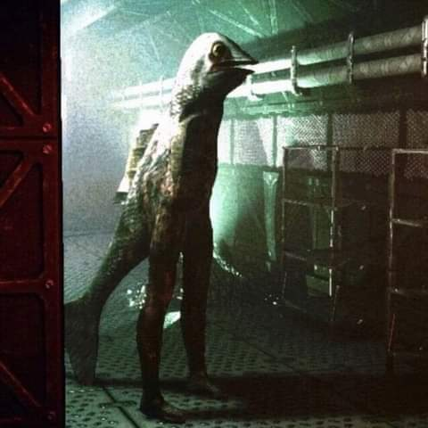

Encontrei um homem peixe no meu depósito de carnes
Recebemos uma ligação com um caso que me deixou entusiasmado antes de arrepiado, um fazendeiro residente no estado de Goiás alegou ter tido contato com um Fishman ou Homem Peixe, criatura essa que foi criadao um folclore por conta dos contos de H.P Lovecraft. Os fishman foram bastante caçados entre os séculos XVII e XVIII pois eram criaturas bem dóceis apesar da aparência assustadora, sua carne era consumida pelos marinheiros que diziam que era a carne mais saborosa que haviam experimentado.
Dessa como sabíamos que os fishman são criaturas pacíficas resolvemos ir apenas uma dupla, eu Clóvis e o Agente Leonardo Emanuel, foram horas e horas em estrada de chão até chegar no estabelecimento do Sr. Fagundes
Era uma propriedade claramente colonial, certamente uma herança de família, chegando lá Sr. Fagundes parecia estar angustiado e um pouco pálido mas mesmo assim foi simpático e nos convidou para entrar.
Assim começamos o protocolo de sempre.
CLÓVIS: Bom dia Sr. Fagundes, faremos algumas perguntas de rotina para o senhor, se não souber responder não precisa se preocupar.
FAGUNDES: ok.
CLÓVIS: Você vive aqui por quanto tempo?
FAGUNDES: Hmm, desde que nasci, essa casa sempre foi da minha família.
CLÓVIS: Pode parecer meio inusitado o que irei pedir, mas você poderia mostrar albuns de fotos de sua família?
Fagundes: Bem posso sim.
Após analisar as fotos cheguei a conclusão de que a família do Sr Fagundes fazia parte da máfia dos fishman, eles contrabandeavam e saqueavam suas vilas, os fishman apesar de serem dóceis são vingativos e não esquecem do mal que fizeram a eles, provavelmente o fishman que ele avistou está atrás da família Fagundes mesmo antes de que o Sr Fagundes havia nascido
Fomos checar o depósito de carnes e depois de alguma procura encontramos o fishman escondido por trás de algumas prateleiras e fomos conversar com ele, ele ese chama Johan Melmand, veio da inglaterra para o Brasil em busca de vingança contra os Fagundes.
Após algumas horas de conversa chamamos ele e o Sr. Fagundes para resolverem suas diferenças como pessoas racionais
Depois de muita discussão Johan aceitou e viu pelo seu próprio senso de justiça que não deveria culpar um homem por conta de erros de seus ancestrais, e assim o levamos de volta para a Inglaterra, onde ele vive com sua família em um lago
Essa foi sem dúvidas a melhor experiência que tive com anomalias, nunca esperei ver tantos fishmen assim juntos, verdadeiramente emocionante. Sobre o Sr. Fagundes, hoje ele está bem, e parou até mesmo de comercializar carne bovina com receio de que algo semelhante ocorra de novo. Mais um caso solucionado com sucesso, a ITCAT agradece.
Esse foi o melhor dia da minha vida, experiência marcante.
Jairo, Clóvis (1996)